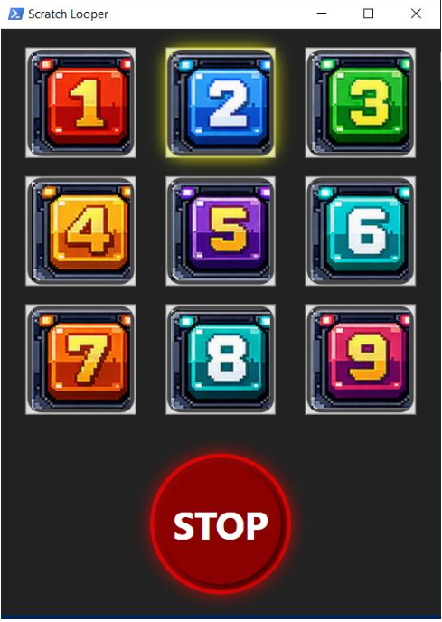
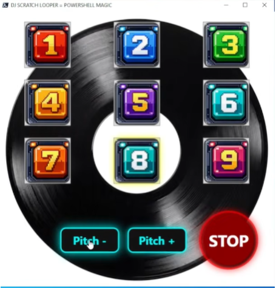
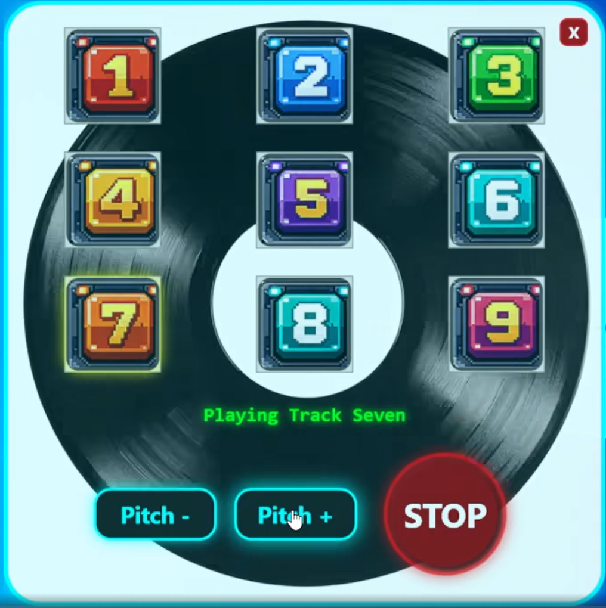

Powershell Magic Back once again with the Powershell 🥓 flavour

Yes I Still PowerShell
So it's tough writing this blog, as well I was documenting the puppies, and well sadly a few weeks back, Frost didn't want to eat any food on Thursday. So got her to the vets Friday morning, who did various quick tests, but wanted to do a blood test. So took Frost to the park with my wife and daughter, as well apart from not eating she was fine. She had been running around on the beach on Thursday, but just not eating.
So after going to the park to wait for blood test results, got told that her white blood cell count was really high, and that it could be one of two things, which were not life threatning, but they needed to open her up and operate. It never crossed my mind that, this would be the last time I would see Frost alive.
After coming back home, and being convinced I would be collecting Frost later the same day as she was always so happy, and such a loving dog to make you happy, and yeah apart from not eating seemed fine, well in my opinion.
So my wife gets a call from the vet and I gathered it was not good, basically Frost was riddled with cancer and tumours, which had caused internal bleeding. Basically nothing they could do to fix my dog, and this would explain why she went off her food. This hit me like a bus, and yeah still does, I do miss Frost so much, just never had a pet going from fine to dead in like 24 hours, just crazy. I guess that is life though, just so gutted she was only 372 days old, certainly taken to soon.
Been Busy
Having 5 daughters and now 3 dogs, life does keep me busy, especially having a full time job which I still really enjoy. Just time gets the better of me, I have been busy with life, and work, as well as trying to be good enough to one day enter a DMC Scratch Championship 😂 maybe one day. Yes I have been working on my DJ scratching skills and making my own music. Now I have shared that information this is related to what this blog is about. No I have not spent 6 months preparing this 😀 I spent a few days building something in my spare time.
I Had An Idea And Rolled With It
Very late Saturday night, like almost Sunday I just got thinking about the DJ Flash loopers that I used to use to try and get good at scratching. These consisted of a simple window, with buttons on, and each button represented a looping beat pattern, that would loop endlessly. Some of the more advanced Flash loopers would give you the option to speed up or slow down the current track playing. I just thought, could I replicate this just using PowerShell? Like why was I thinking this at this time, and why was I talking to myself? Thankfully before I went completely crazy I was told it was my bedtime, so I went to bed. Sunday morning I got on the keyboard, and built a proof of concept, as in a form that had buttons and played music. I was happy but, to me it was lacking wow factor, but this proved if I persisted on this mission I might actually have something useful. This had took longer than I wanted it to take, but this idea had now come to life, and I was sure with some more studying on WPF, and other DLLs that could be integrated I was sure this would be possible to get an end result like I had the idea about. Picture of the proof of concept which worked, but I wanted more bling.

Making This Look More Like A DJ Looper
Although I normally reach to PowerShell Universal to build an awesome looking GUI, this time I wanted to use WPF, as well I haven't gone that route before to create a GUI, and having seen numerous posts and blogs on this I decided this would be the 'thing' I would used to make the GUI. To my surprise it gives a lot of options to customise the look and feel of the form. I always think animation looks cool, and well what could be better animated image than a nice big vinyl spinning around as the music plays. Not forgetting the the pitch buttons to speed up or slow down the current track playing. I was super happy of how this was looking, but the pitch controls were distorting the music badly, and it didn't sound good. I did not want to give up at this stage, because the pitch controls would just be a nice to have not essential. However if you suffer from ADHD I got to get an answer. So spent a good amount of time to locate some DLL to integrate into the script, like what I was doing to control the music playing and it endlessly looping. So after having a break and then revisiting this Monday evening after work, I ended up going the whole 9 yards so to speak and with some referecing past projects I done and more reading, I managed to build my own DLL to stretch the music to allow it to speed up and slow down. Not sure why I decided I had to do this immediately after work, as yeah I remember walking the dogs Monday evening, but I also remember being on the keyboard for a good few hours or more, and not much else.

Time To Make This Into A Module
So now to me this is where PowerShell proper shines. As you might be reading this, thinking so-what, I built a DJ Looper but it's only good for me and you might not like the look of the form. To me I can easily solve this, making the current entire working script into a function, and allow the things I want to allow end users to change to pass these as parameters, which are referenced in the function. Now I had an application that can endlessly loop music, speed music up, slow music down, and start and stop playing music. How about 'we' add the ability to allow people to add 9 of their favourite MP3 songs to play in this music player rather than the default beats I made and included in this module. No problem, this is built in. End users can also choose 9 of their own images to use as the buttons rather then the default I provide. I also gave the ability to change the background. To me this was now almost like a template that anyone could now use to make their own DJ Looper, and style it how they want, without having to actually know or understand the code behind it all, just provide the parameters and you get the look and sound you want. I also needed to package the two DLLs I used to make this form fully work playing and manipulating the music. I also needed to package the 9 button images, and the background image. Then finally I also packaged with the module the 9 default MP3 beats that I created, and giving to you for free 😁
Plonker moment It Was Late
Yes I got over excited and as I had a fully working DJ Looper that was now doing all the things I wanted it to do controlled by the module I had created loaded and tested. So I blame it being late at night spurring me on to upload this to the gallery, but I did it anyway...and well I left some hardcoded paths in the final uploaded module. Note to self...always check modules I am going to share do not contain local paths which meant for the handful of people who had downloaded this, would have had to re-code my function, not cool, so thankfully this was a quick fix. However it was bugging me about being able to click the pitch buttons and nothing happening after 5 clicks, and now this form I was so pleased with, well I wanted to style it more, to make it look even more like one of those classic DJ Flash loopers I have used over the years. The main thing I now had a fully working version on the PowerShell Gallery which others would be able to use and it all work as expected. Mission complete right? Small Demo of the project at this stage https://www.youtube.com/shorts/bAkoUGaa8W0
Now This Only Ran In PowerShell 7
Looking at this on my lunch break today and after work again, I cracked the final few hurdles by building a DLL to solve the issue of the pitch shift not distorting the sound. Due to the DLL I built only seeming to work if it was compiled in .NET 8 which did not work in PowerShell v5, so thankfully we have PowerShell 7. This did work in PowerShell 7 so now I wanted the record to spin faster or slower depending on how many times the pitch buttons were pressed. However the code would only allow it get to a certain level, which then meant a user could potentially just keep clicking the same pitch button, yeah the first 5 clicks will speed up the record and the song, but after 5 clicks no further changes happen. So thought about how to fix this, which I used global variables for to store and update then use functions with those values to calculate the current clicks or speed of the track playing, then once it hit the limit, I got the button to hide, so the user cannot keep clicking it. I also wanted to then focus on making this window look better, as although I was really happy with it, I wanted perfection now. So I love rounded corners, and opacity. So applied that to this form, got rid of the title bar, but this then meant I was missing the minimise, maximise and close buttons. However I was able to code my own close button to emulate the classic 'X' in the top right hand corner. I also then gave the form a nice border, as well as information on the current track playing to have this displayed dynamically on the screen.

Overview
This is a PowerShell module that creates a WPF-based music looper UI for playing nine beat pads, controlling pitch, and stopping playback. The script uses embedded XAML to build the app window, binds button clicks to loop playback, and animates a vinyl-style background.
Features
- 3x3 beat pad grid with visual pad graphics
- Play a single MP3 loop per pad
- Stop playback with a dedicated STOP button
- Pitch up / pitch down controls for the active loop
- Animated rotating vinyl background while music plays
- Visual glow effect on the active pad
- Graceful audio stop when the window closes